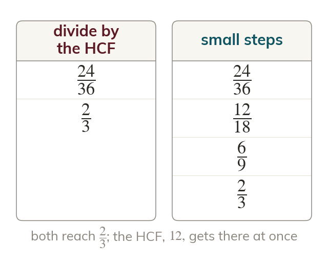
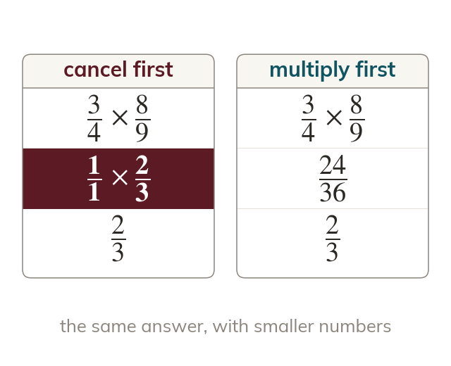
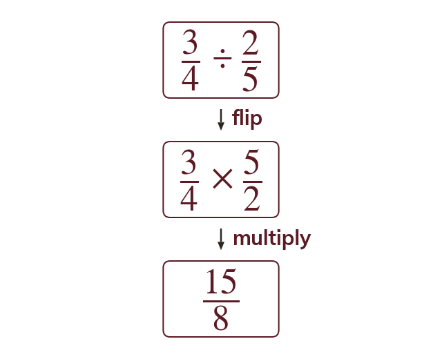
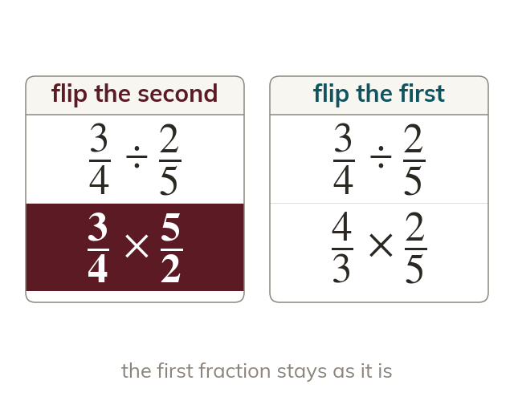

The same fraction, smaller numbers
Dividing the numerator and the denominator by the same common factor gives an equivalent fraction. Dividing by their HCF reaches the lowest terms in one step.
Cancelling keeps the numbers small, and small numbers mean fewer slips. Today we cancel before multiplying, and use the reciprocal to turn every division into a multiplication.
Work down the page at your own pace. Write every answer in your book first, then click to check it.
Read each card, then follow the worked examples one step at a time.

Dividing the numerator and the denominator by the same common factor gives an equivalent fraction. Dividing by their HCF reaches the lowest terms in one step.

Multiplying fractions multiplies the numerators together and the denominators together. Cancelling a numerator with any denominator first gives the same answer with smaller numbers.
Pick an answer. If it's wrong, the feedback tells you which mistake it was.
Read each card, then follow the worked examples one step at a time.

Dividing by a fraction gives the same answer as multiplying by its reciprocal. The reciprocal of is so dividing by is multiplying by

Only the fraction you divide by is flipped. Cancel after the flip, never before it.
Pick an answer. If it's wrong, the feedback tells you which mistake it was.
Finished? Next lesson: 8.15.2 Multiplying and Dividing Mixed Numbers.
For each skill, tap the one that is true for you today. Your Revise pages start with anything you mark Not yet.
Your ratings are saved on this device only.
Log in, then search for a code to practise that skill.
Videos, worksheets and more on each part of this lesson.